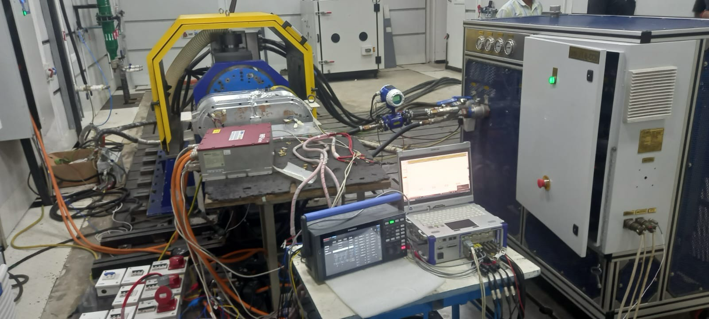
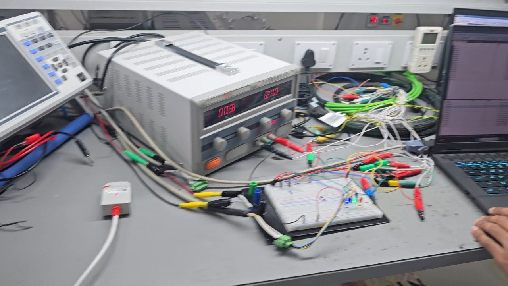

Making a CAN Gateway Controller Work in Context
I helped select a CAN gateway controller, then integrated, configured, programmed, debugged, and lab-tested its communications behavior.
Controller integration in an existing controls environment.
PAL-K’s electric-truck controls environment used CAN communication among motor-control, vehicle-control, DC-DC, and logging contexts. My work focused on making the selected gateway-controller implementation function within that existing context.
From selection to controller behavior.
I helped select the STW ESX.4cs-gw gateway controller. I implemented and integrated CAN matrices, configured and programmed the controller using openSYDE target support and logi.CAD3, and worked with a PCAN/DB9/USB laptop diagnostic path.
Initialization required a deeper method.
The controller initialization was a major learning curve relative to my STM32 and ESP32 experience. I worked through topology configuration and generated platform support, then configured message reservation, pointers, RX/TX behavior, callbacks, DLC, RTR, identifiers, and data handling.
The normal system rate was 500 kbps. I also used a 125 kbps configurability test; later, an ARAI dynamometer environment operated at 250 kbps, making bitrate flexibility practically relevant. In the described lab setup, the Daimler VCU was unavailable, so a laptop generated VCU commands while I tested the communications path.
Documentation became a practical debugging tool.
This was my first substantial exposure to CAN. Working through an unfamiliar industrial controller and vendor toolchain showed me that embedded integration depends on understanding both the protocol and the configuration details around it. Each initialization step became easier to isolate once I understood how the topology, generated support, and controller settings fit together.
Controller integration, configuration/programming, initialization debugging, and the described lab testing.


Bench setup and integration testing — PAL-K gateway-controller integration work. Video shown without audio.